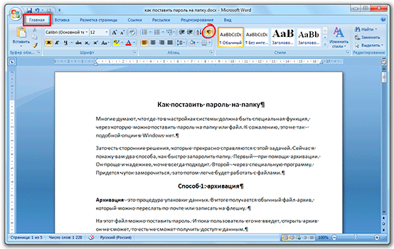
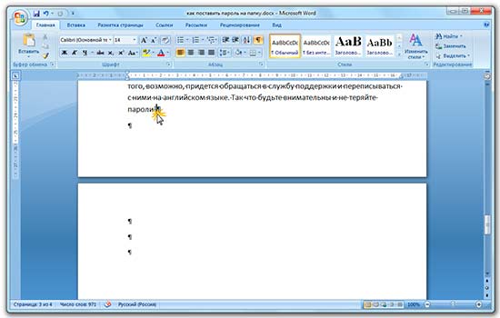
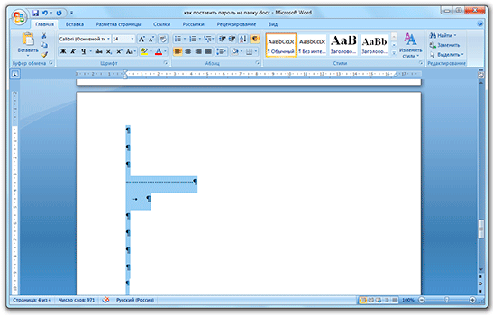
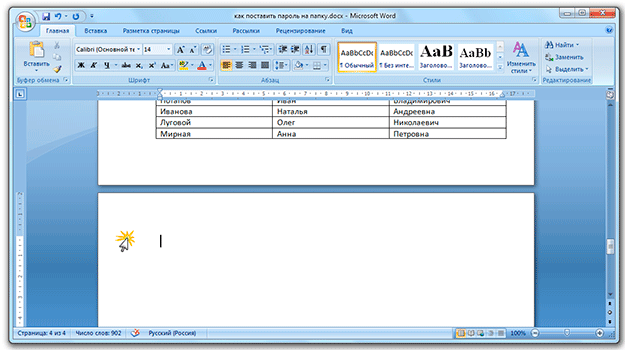
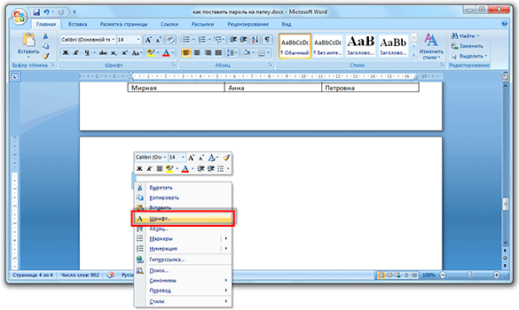
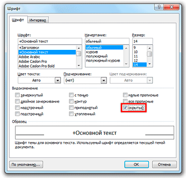

Как удалить страницу в Word
В этом уроке я покажу, как удалить пустую страницу в Ворде. А также как из документа убрать листы с текстом.
Как удалить пустой лист
Для удаления пустых листов в Ворде достаточно убрать лишние абзацы и разрывы. По умолчанию эти символы скрыты, поэтому сначала их нужно показать.
Для отображения скрытых символов используется вот такая кнопка ¶. Находится она в верхней части программы, в разделе «Главная».
Щелкаем по кнопке ¶ один раз левой клавишей мыши. Сразу после этого документ меняется – в нем появляются точки и непонятные знаки.
Выглядит такой текст не очень приятно, зато мы видим всё, что скрыто. В том числе абзацы, пробелы и разрывы. Эти символы как раз и создают пустые страницы.
Осталось удалить лишние знаки. Для этого ставим мигающий курсор туда, где заканчивается текст – щелкаем там левой кнопкой мыши. Затем нажимаем несколько раз клавишу Delete или del на клавиатуре.
А если лишних символов много, то проще не удалять их по одному, а выделить все сразу.
Для этого нажимаем левую кнопку мыши там, где заканчиваются скрытые знаки и, не отпуская мышку, тянем курсор вверх. Когда все эти знаки подкрасится голубым цветом, нажимаем один раз клавишу Delete или Backspace.
После этого нажимаем кнопку ¶, чтобы убрать скрытые символы. Документ вновь станет таким, как и был – без точек и значков.
Работает этот способ в любой версии программы Microsoft Office Word: 2003, 2007, 2010, 2013, 2016 и других.
Если пустая страница не удаляется
Бывает, что в конце документа есть таблица. И вот частенько после нее добавляется еще один чистый лист, который никак не получается удалить.
Дело в том, что в программе Ворд по умолчанию после таблицы вставляется абзац. И если таблица находится в самом конце, то этот абзац переносится ниже. Тем самым он создает ненужную страницу.
Вырезать этот абзац никак нельзя, зато его можно скрыть:
1. Выключаем отображение непечатаемых символов, если они показаны (кнопка ¶).
2. Выделяем абзац в конце таблицы - на новом листе. Для этого наводим курсор на левое поле документа (возле пустого абзаца) и щелкаем там один раз левой кнопкой мыши.
3. Когда абзац выделился, а, значит, появился небольшой прямоугольник голубого цвета, наводим на него курсор и щелкаем правой кнопкой мыши. Из меню выбираем пункт «Шрифт…».
4. В появившемся окошке ставим птичку на «Скрытый» и нажимаем ОК.
После этого пустой абзац убирается. А вместе с ним удаляется и пустая страница в Ворде.
Как удалить страницу с текстом
Когда из документа нужно стереть страницу, на которой что-то напечатано, то делается это через выделение текста и клавиши Delete или Backspace. Причем неважно, где текст находится: в начале, в конце или в середине документа (между страницами).
Кстати, рисунки и фотографии убираются из Ворда точно так же – выделяем их и нажимаем Delete.
- Наводим курсор в самое начало листа на левое поле (туда, где ничего нет).
- Нажимаем левую кнопку мыши и, не отпуская её, тянем вниз, тем самым закрашивая текст.
- Когда всё выделится, отпускаем кнопку мыши и нажимаем клавишу Delete или Backspace на клавиатуре.
На заметку. Если в конце листа есть таблица, то выделяйте её не ровно конца, а чуть больше. Так, чтобы был затронут «хвостик» – одна или две строки после таблицы.